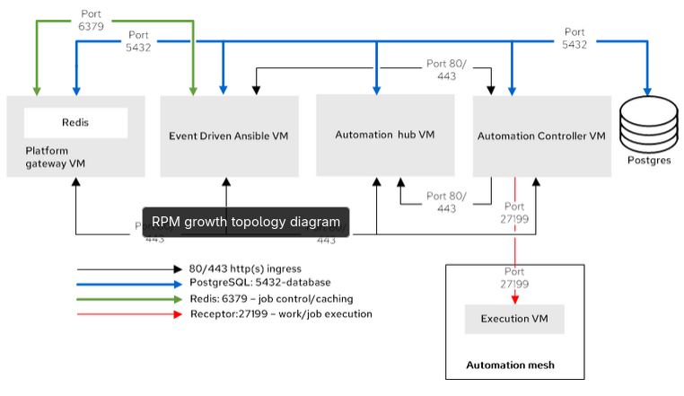

RPM Installation
The RPM installer is one of the three primary installation modes for Red Hat Ansible Automation Platform 2.6, alongside the Containerized and Operator modes. It is designed to deploy the platform on virtual machines or bare metal by using RPM packages directly on Red Hat Enterprise Linux (RHEL), where customers manage the entire product and infrastructure lifecycle.
Deprecation and Support Status
The sources explicitly state that the RPM installer was deprecated in version 2.5 and is scheduled for complete removal in version 2.7. Despite this, it remains supported for RHEL 9 throughout the lifecycle of version 2.6 to facilitate customer migrations to existing supported topologies, such as container-based or operator-based deployments. Organizations are encouraged to consult the support matrix for specific upgrade and migration paths
RPM Deployment Topologies Even with its deprecated status, the sources provide two "opinionated" reference architectures for this mode to ensure features are available immediately upon installation:
RPM Deployment Topologies Even with its deprecated status, the sources provide two "opinionated" reference architectures for this mode to ensure features are available immediately upon installation:
-
RPM Growth Topology: This model offers a smaller footprint for organizations that do not require redundancy
-
It is typically tested on a single virtual machine (VM) that houses the platform gateway, automation controller, private automation hub, Event-Driven Ansible, and a managed database

-
-
RPM Enterprise Topology: This model is built for production environments requiring high uptime, performance, and scalability
-
It uses a redundant configuration with multiple VMs for core components and requires an external load balancer (HAProxy) and an externally managed database

-
Technical Constraints and Requirements
The RPM installation mode has specific requirements and limitations that distinguish it from other modes:
-
Redis Limitation: Unlike other modes, RPM-based deployments do not support external Redis; the service must be colocated on the platform component VMs
-
Infrastructure Minimums: Each VM in these topologies generally requires at least 16 GB RAM, 4 CPUs, and 60 GB of disk space with 3000 IOPS
-
Ansible-Core: While the system-wide package is used for installation, the platform uses ansible-core 2.16 for its control plane and built-in execution environments
-
Networking: Communication between services occurs over standard ports, most notably Port 27199 (Receptor) for the automation mesh and Ports 80/443 for web traffic
RPM mode is the old-school, hand-built setup. It’s familiar, proven, and still supported today (v2.6), but it relies on manual assembly and upkeep. Red Hat has made it clear this approach is nearing retirement (v2.7), and the runway is intentional: giving you time to move to modern, automated platforms like Containers or Operator mode before RPM fades out for good.